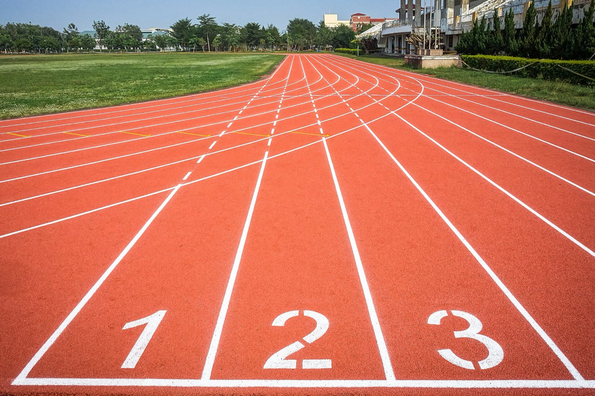
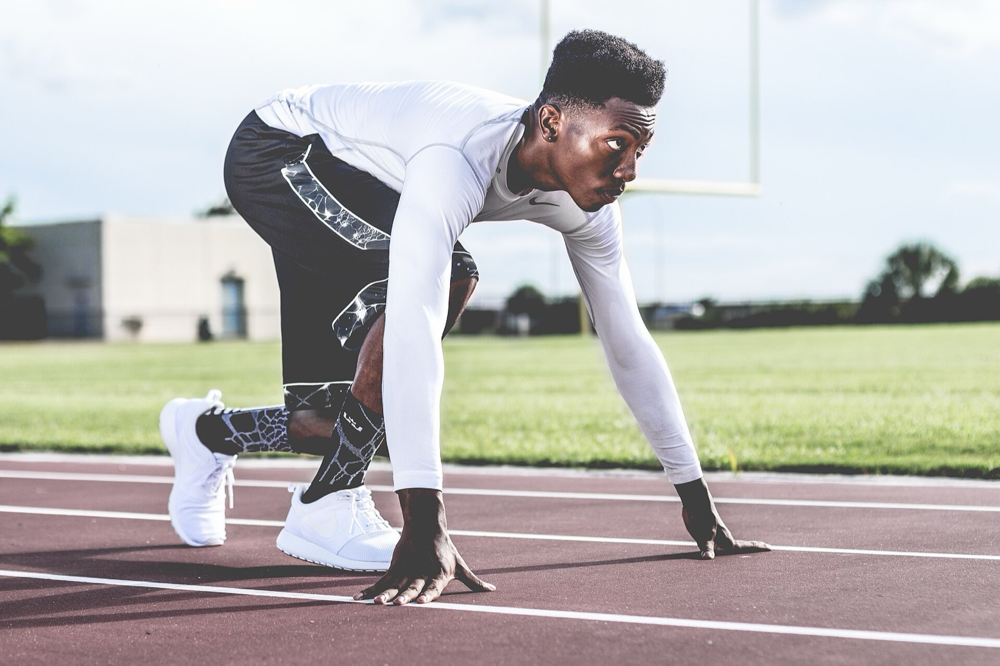
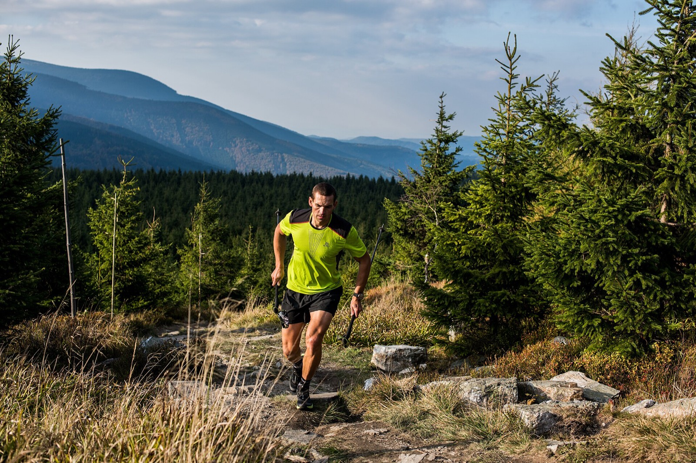
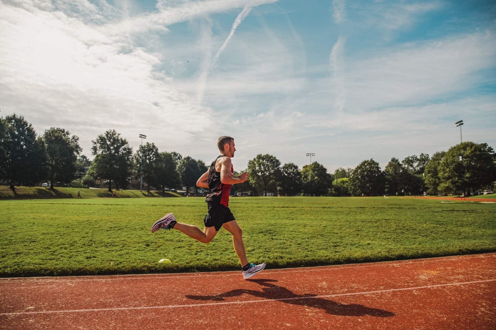
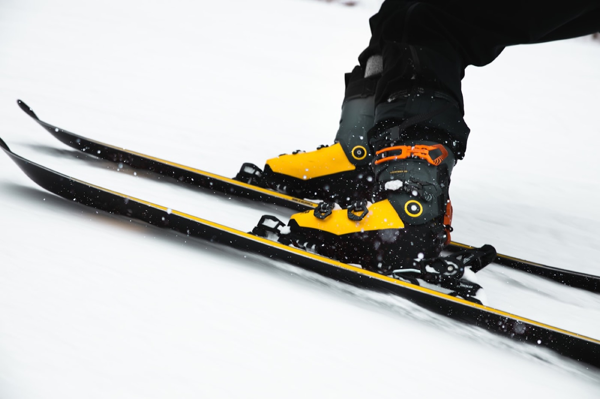

La podologie au service de votre sport
Course sur route, trail, triathlon, ski… chaque discipline sollicite le pied à sa manière. Le point commun : c’est lui qui encaisse, amortit et propulse. Bilan, semelles sur mesure et prévention, au plus près de votre pratique.

La plupart des blessures du sportif sont mécaniques
En sport d’endurance, la grande majorité des blessures ne sont pas des accidents : ce sont des pathologies de surmenage. Elles s’installent quand la charge d’entraînement progresse plus vite que la capacité des tissus à s’adapter — souvent en conjonction avec un déséquilibre biomécanique ou un matériel inadapté.
Agir sur les appuis, c’est agir sur l’une des pièces de ce puzzle. Le rôle de l’orthopédiste-podologue est d’identifier ce qui, dans la façon dont vous prenez appui et dont vous bougez, peut être soulagé ou rééquilibré — en complément du travail sur l’entraînement et la rééducation.
- Charge d’entraînement
Volume, intensité, dénivelé : une progression trop rapide est le premier facteur de blessure.
- Biomécanique & appuis
Type de pied, déroulé du pas, pronation ou supination influencent la répartition des contraintes.
- Matériel
Chaussures usées ou inadaptées, changement brutal de modèle : des facteurs souvent sous-estimés.
L’analyse de la foulée, étape par étape
Avant tout appareillage, un bilan permet de comprendre comment vous prenez appui — debout, puis en mouvement.
L’entretien
Vos antécédents, votre pratique (distances, fréquence, objectifs), vos douleurs et leur contexte d’apparition. C’est souvent là que se dessine l’origine d’une gêne.
L’examen statique
Étude de la posture et des appuis à l’arrêt, sur podoscope ou plateforme : répartition des pressions, axe du pied, du genou et de la hanche.
L’examen dynamique
Observation de la marche et de la course : déroulé du pas, attaque du pied, tendance à la pronation (le pied « rentre ») ou à la supination (le pied « sort »). C’est le temps fort du bilan.
Les chaussures & les empreintes
L’usure de vos chaussures raconte votre foulée. Si un appareillage est utile, des empreintes sont prises pour fabriquer des semelles sur mesure, adaptées à chaque paire.
Chaque discipline, ses spécificités
Choisissez votre pratique pour découvrir ce que la podologie du sport peut y apporter.
Course sur route
La course sur route, c’est la répétition : des milliers d’impacts sur un sol dur, un geste très régulier. L’enjeu podologique est d’amortir et de répartir ces contraintes, et de veiller au chaussage.
- Impacts répétés sur surface dure
- Geste régulier : un déséquilibre se paie sur la durée
- Semelles running adaptées à la chaussure et au volume
- Progressivité et cadence, en lien avec l’entraînement

Trail & montagne
Le trail ajoute trois contraintes à la course sur route : le dénivelé, le terrain et souvent la durée.
En descente, les impacts et le freinage chargent l’avant-pied (orteils qui butent, ongles noirs). En montée, le mollet et le tendon d’Achille travaillent. Sur terrain irrégulier, la cheville est très sollicitée : stabilité et proprioception préviennent l’entorse.
Des semelles qui stabilisent et amortissent sur terrain accidenté, des orthoplasties de protection et un chaussage adapté font la différence sur la durée.

Triathlon
Nager, rouler, courir : le triathlon enchaîne trois disciplines, mais c’est souvent la transition du vélo vers la course qui met le pied à l’épreuve. En descendant du vélo, les jambes sont « verrouillées » par l’effort et la position ; les premières foulées se font alors sur des appuis fatigués et parfois désorganisés — les fameuses « jambes de coton ».
Préparer cet enchaînement, c’est soigner l’interface pied-chaussure sur les deux disciplines : une semelle pensée aussi bien pour la chaussure de vélo, rigide, que pour celle de course, souple, aide à stabiliser l’appui, à transmettre l’énergie sans point de conflit et à aborder la course à pied dans de meilleures conditions.

Ski & sports d’hiver
Rigide et enserrant le pied, la chaussure de ski de série convient rarement parfaitement : douleurs, points de compression, pied qui « bouge », orteils froids, manque de précision.
C’est l’objet du bootfitting. La semelle sur mesure cale le pied, améliore le confort, la stabilité et la précision du pilotage (les appuis se transmettent mieux aux carres). Ski alpin, ski de randonnée comme ski de fond.

Comprendre les blessures les plus courantes
Quelques repères grand public sur les pathologies que rencontrent souvent coureurs et triathlètes — et la place qu’y tiennent la podologie et la kinésithérapie du sport.
Aponévrosite plantaire (fasciite plantaire)
Douleur sous le talon, typiquement vive aux premiers pas le matin — certains parlent de « clous plantés dans le talon » — qui s’atténue à l’échauffement puis peut revenir. Elle naît d’une sur-sollicitation de l’aponévrose plantaire, la lame fibreuse tendue sous la voûte du pied. Hausse rapide du kilométrage, chaussures usées, pied creux ou pied plat et surfaces dures en sont des facteurs favorisants.
Côté podologie — des semelles sur mesure soutiennent la voûte et déchargent la zone douloureuse ; le chaussage et la reprise sont ajustés.
Avec le kiné étirements du mollet et de l’aponévrose, travail des tissus et reprise progressive de la charge.
Tendinopathie d’Achille
Douleur et raideur du tendon d’Achille, à l’arrière de la cheville, plus marquées au réveil et en début d’effort. C’est l’une des pathologies les plus représentatives du coureur, presque toujours liée à un excès ou à une variation trop rapide de la charge.
Côté podologie — l’analyse de la foulée et, parfois, des semelles ou une talonnette permettent de moduler les contraintes sur le tendon.
Avec le kiné le renforcement excentrique du mollet (protocoles type Stanish/Alfredson) et la réathlétisation progressive sont la pierre angulaire de la prise en charge.
Périostite tibiale
Douleur diffuse le long du bord interne du tibia, apparaissant à l’effort. Elle touche fréquemment les coureurs lors d’une reprise, d’une augmentation de volume ou d’un entraînement répété sur sol dur (le syndrome de stress tibial médial, ou « shin splints »).
Côté podologie — des semelles peuvent amortir et mieux répartir l’appui ; les conseils portent aussi sur les surfaces et les chaussures.
Avec le kiné gestion de la charge, renforcement et, parfois, travail de la foulée (cadence) pour réduire les contraintes.
Syndrome de l’essuie-glace (bandelette ilio-tibiale)
Douleur sur la face externe du genou, qui apparaît typiquement après quelques minutes de course et oblige souvent à s’arrêter. Elle est liée à la sollicitation de la bandelette ilio-tibiale, surtout sur les sorties longues et en descente.
Côté podologie — en cas de désaxation de l’appui, des semelles peuvent contribuer à réduire les contraintes sur le compartiment externe.
Avec le kiné renforcement des muscles de la hanche (notamment le moyen fessier) et adaptation de l’entraînement sont au cœur du traitement.
Syndrome fémoro-patellaire (syndrome rotulien)
Douleur à l’avant du genou, autour ou derrière la rotule, majorée en descente, en position accroupie ou après une position assise prolongée — d’où son surnom de « genou du coureur ».
Côté podologie — lorsque l’appui du pied participe à la contrainte sur la rotule, des semelles peuvent faire partie de la solution.
Avec le kiné le renforcement du quadriceps et des muscles de la hanche, central, est associé à une reprise dosée.
Métatarsalgies & névrome de Morton
Douleurs de l’avant-pied, au niveau des têtes des métatarsiens. Le névrome de Morton se traduit volontiers par une brûlure ou une sensation de décharge électrique entre le 3ᵉ et le 4ᵉ orteil, aggravée par des chaussures serrées.
Côté podologie — des semelles avec appui de décharge et des conseils de chaussage (largeur, hauteur de l’avant-pied) visent à soulager la zone.
Avec le kiné / le médecin un avis est utile si la douleur persiste, pour préciser le diagnostic et la conduite à tenir.
Fracture de fatigue (de stress)
Micro-fissure d’un os (souvent un métatarsien ou le tibia) provoquée par des contraintes répétées. La douleur, d’abord à l’effort, devient localisée, croissante et peut persister au repos. Elle impose une mise au repos et un avis médical.
Avis médical ce diagnostic relève du médecin (imagerie). La podologie intervient surtout en amont (prévention, gestion des appuis) et lors de la reprise.
Ampoules & ongles noirs
Désagréments classiques des longues distances : les ampoules résultent de frottements répétés, l’ongle noir (hématome sous l’ongle) de chocs à répétition, souvent en descente ou avec des chaussures mal dimensionnées.
Côté podologie — orthoplasties de protection, conseils de chaussage et de laçage permettent de prévenir la plupart de ces problèmes.
Bien choisir — et renouveler — ses chaussures
La chaussure de running est un consommable : c’est elle qui relie votre pied au sol, et son état compte autant que son modèle.
- Renouveler avant l’usure complète — l’amorti et la stabilité se dégradent bien avant que la semelle ne soit « finie ». Une paire fatiguée expose davantage aux douleurs.
- Choisir selon sa foulée et son terrain — route, chemin, trail, distances : les besoins diffèrent. Il n’existe pas de « meilleure marque » universelle, seulement la chaussure qui convient à votre pied.
- Changer de modèle progressivement — un nouveau modèle modifie les appuis ; introduisez-le sur des sorties courtes avant de l’adopter.
- Observer l’usure — la façon dont vos semelles s’usent renseigne sur vos appuis : apportez vos paires habituelles lors du bilan.
Les semelles sont conçues sur mesure pour s’adapter à vos chaussures, quelle que soit la marque :
- Adidas
- Asics
- Brooks
- Hoka
- Mizuno
- New Balance
- Nike
- On
- Salomon
- Saucony
Marques citées à titre indicatif : aucune n’est partenaire du cabinet, leurs noms restent la propriété de leurs titulaires.
Podologue & kiné du sport, des rôles complémentaires
Soigner et prévenir une blessure de sportif est rarement l’affaire d’un seul professionnel. La force, c’est la coordination.
Orthopédiste-podologue
Analyse de la statique et de la foulée, semelles et orthèses sur mesure, conseils de chaussage. Agit sur l’interface pied-sol.
Kinésithérapeute du sport
Bilan, rééducation, renforcement et travail excentrique, analyse de course et reprise progressive. Souvent le pivot de la prise en charge.
Médecin du sport
Pose le diagnostic, prescrit l’imagerie et le traitement médical, coordonne les situations complexes.
Entraîneur
Planifie le volume et l’intensité. Une charge bien dosée reste la meilleure prévention des blessures de surmenage.
Quand consulter ?
Une douleur qui persiste au-delà de quelques jours, qui s’aggrave d’une sortie à l’autre, qui modifie votre foulée ou qui réveille la nuit mérite un avis. Mieux vaut consulter tôt : la plupart des pathologies de surmenage se règlent d’autant mieux qu’on les prend au début.
Quelques principes pour durer
Des repères généraux, à individualiser : votre histoire, vos objectifs et votre corps priment toujours sur les règles toutes faites.
Progresser doucement
Augmentez le volume et l’intensité par petites touches. Les hausses brutales — ou la reprise trop ambitieuse après une coupure — sont la cause n°1 des blessures.
Renforcer le corps
Gainage, hanches, mollets : un corps renforcé encaisse mieux. Le renforcement musculaire est un investissement, pas une option.
Varier les terrains
Alterner surfaces et dénivelés répartit les contraintes et limite les sollicitations répétées au même endroit.
Soigner le chaussage
Des chaussures adaptées, renouvelées avant usure complète, et tout changement de modèle introduit progressivement.
Récupérer
Sommeil, jours faciles et semaines allégées font partie de l’entraînement. C’est au repos que le corps s’adapte.
Écouter les signaux
Une douleur qui s’installe est un message. La contourner en serrant les dents transforme souvent une gêne passagère en blessure durable.
Les semelles, un outil parmi d’autres
Les données scientifiques sur les semelles dans le sport sont encourageantes : bien indiquées, elles aident à soulager certaines pathologies et participent à la prévention. Mais elles ne font pas tout, et leurs effets à long terme restent à nuancer selon les études. La bonne approche est individualisée et combinée : appareillage quand il est utile, ajustement de l’entraînement, renforcement et rééducation. C’est cette cohérence d’ensemble qui protège le mieux le sportif.
Sources & ressources
Avertissement — les informations de cette page sont destinées au grand public, à titre éducatif. Elles ne constituent pas un avis médical et ne remplacent ni un diagnostic, ni une consultation. En cas de douleur, demandez l’avis d’un professionnel de santé.
- IRBMS — Effet des semelles lors de la course à pied.
- Vincent Demongeot, podologue du sport — L’aponévrosite plantaire et le syndrome rotulien.
- Walter Santé — Pathologies du coureur : le guide.
- École d’Assas — Le bilan podologique : déroulement.
- KOSS Sport — Kinésithérapie du sport et blessure en course à pied.
- EM-consulte — Apport de la podologie dans la course à pied.
- Belledonne Podologie — Bootfitting & semelles pour chaussures de ski.
- Pododistin — Podologie du trail & du running.
Faire le point sur votre pratique
Que vous prépariez un premier 10 km, un Ironman ou une saison de ski, un bilan en cabinet aide à avancer plus sereinement. 30-32 rue Broca, 75005 Paris.